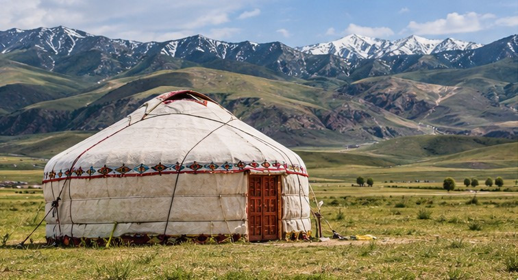
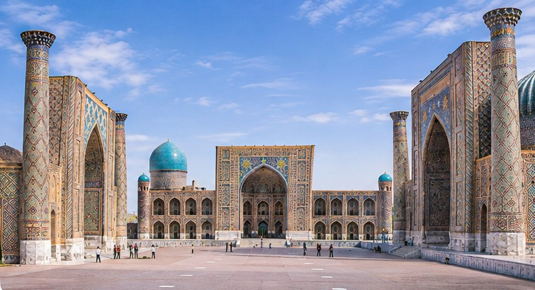
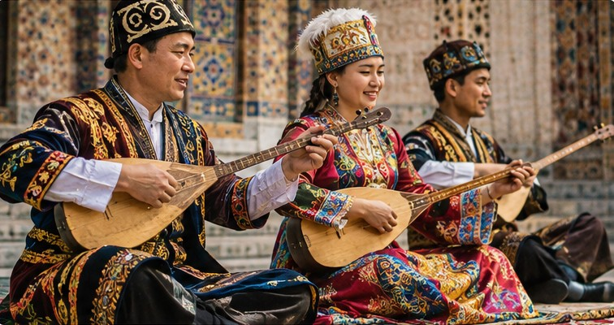
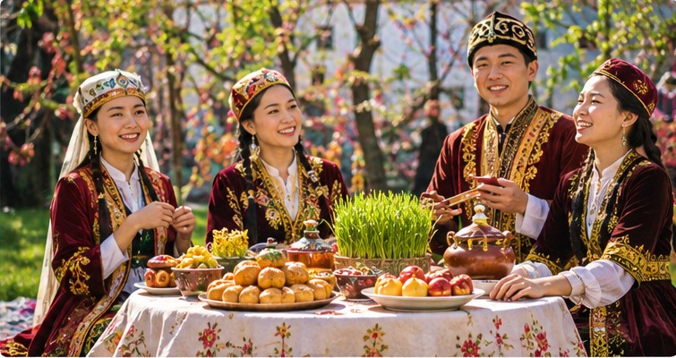

Kazakhstan
Kazakhstan is known for its vast grasslands, or steppes, which historically supported nomadic pastoral communities.
Discover the traditions and history of the region
Central Asia is a region known for its diverse landscapes, historical trade routes, and cultural traditions. Kazakhstan, Kyrgyzstan, Turkmenistan, and Uzbekistan share important historical connections while maintaining their own distinct identities.
The region has been influenced by nomadic communities, agricultural societies, and centuries of trade between Asia and Europe.

Nomadic traditions have shaped many aspects of Central Asian life, including housing, transportation, food, and social organization. The yurt remains one of the best-known symbols of this heritage.
Central Asia contains mountains, deserts, grasslands, and fertile valleys. These environments have influenced where people live, how communities travel, and the development of regional traditions.
Kazakhstan is known for its vast grasslands, or steppes, which historically supported nomadic pastoral communities.
Kyrgyzstan is a mountainous country dominated by the Tian Shan mountain range. Mountain pastures have played an important role in traditional life.
Much of Turkmenistan is covered by the Karakum Desert. Its geography has shaped settlement patterns and historical trade routes.
Uzbekistan is home to historic cities such as Samarkand and Bukhara, which became important centers of trade, scholarship, and architecture.

The Silk Road was a network of trade routes connecting Asia, the Middle East, and Europe. It helped spread goods, ideas, religions, and artistic traditions throughout Central Asia.
Cities such as Samarkand and Bukhara became major centers of exchange and still reflect that legacy today.

Central Asian cultures are known for storytelling, textiles, decorative arts, and music. Traditional instruments such as the Kazakh dombra and Kyrgyz komuz play an important role in cultural expression and celebration.

Nowruz, a spring celebration observed in several Central Asian countries, marks renewal and the beginning of a new season. Communities may celebrate through food, music, gatherings, and cultural activities.
Cultural traditions and historical influences also shape the region's traditional cuisine.
Explore Traditional Foods